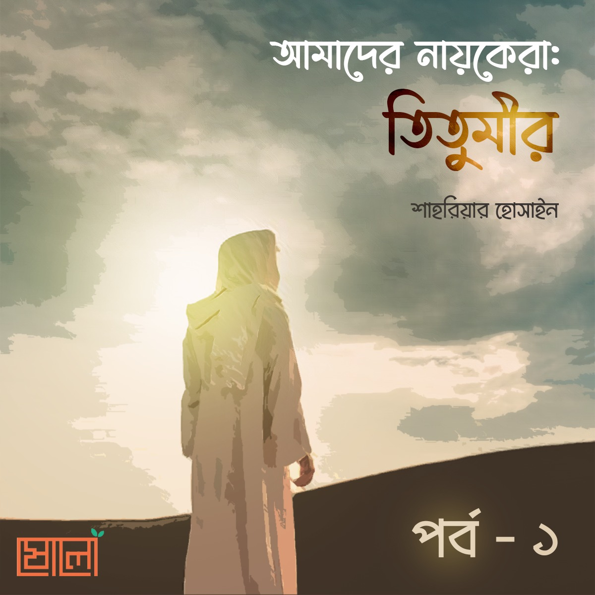

আজ আমরা কথা বলব এমন একজন মানুষকে নিয়ে যিনি লড়াই করেছিলেন বাংলার মানুষের অধিকার আদায়ের জন্য, লড়াই করেছিলেন কৃষকদের জন্য, লড়াই করেছিলেন ইংরেজ ইস্ট ইন্ডিয়া কোম্পানির গোলামি করা জমিদারদের বিরুদ্ধে। কোনো রাজনৈতিক নেতার কথা বলতে আসিনি। বরং একজন সাধারণ মুসলিমের কথা বলতে এসেছি...
.
নাম তাঁর মীর নিসার আলি। সবাই যাকে তিতুমীর হিসেবে চিনি। ১৭৮২ খ্রিষ্টাব্দে চব্বিশ পরগণা জেলার বাদুড়িয়া থানার চাঁদপুর গ্রামে জন্মগ্রহণ করেন। এই মানুষটার বাস্তব জীবনের ঘটনাগুলো আমরা কতটুকু জানি? তাহলে চলো আজ তার জীবন থেকে ঘুরে আসা যাক...
.
প্রায় আড়াইশ বছর আগে অত্যাচারী ইংরেজরা এদেশে কায়েম করেছিল ত্রাসের রাজত্ব। বাংলার মানুষের পায়ে পরাধীনতার শেকল পরিয়ে দিয়েছিল। যুলুম, শোষণ, লুণ্ঠন, ধর্ষণ, হত্যা ইত্যাদি ছিল ইংরেজদের রুটিন কাজ। অত্যাচারী ইংরেজদের বিরুদ্ধে আন্দোলন শুরু করেন সৈয়দ আহমদ শহীদ। ১৮২২ সালে আমাদের তিতু মিয়া তাঁর সোহবত লাভ করেন, ইলমি শিক্ষা গ্রহণ করেন আর তাঁর পরিকল্পনা সম্বন্ধে ওয়াকিবহাল হন। পরবর্তীতে ইলম অর্জনের নেশা তাঁকে মক্কায় নিয়ে যায়। তারপর ১৮২৯ খ্রিষ্টাব্দে তিনি মক্কা থেকে ফিরে এসে আন্দোলনে সরাসরি জড়িয়ে পড়েন।
.
আন্দোলনের শুরুটা ছিল ধর্মীয় ইস্যু কেন্দ্রিক। কিন্তু পরবর্তীতে জমিদার শ্রেণির সামন্ত সম্প্রদায়, নীলকর অত্যাচারী শোষক ও ব্রিটিশ সরকারের নিপীড়নের বিরুদ্ধে আপামর জনসাধারণকে ঐক্যবদ্ধ করে এই আন্দোলন এক বৃহত্তর গণআন্দোলনের রূপ ধারণ করে।
.
আবদুল গফুর চৌধুরী লিখেছেন,
“ইংরেজের বিরুদ্ধে যুদ্ধে প্রাণ দেবার জন্য প্রচুর নওজোয়ানকে তিনি দলে দলে পাঠিয়ে দিতেন, সঙ্গে প্রচুর টাকা-পয়সা পাঠাবারও ব্যবস্থা করতেন। সৈয়দ নিসার আলির একটা বড় সম্বল ছিল, তা হচ্ছে অগ্নিবর্ষক সৃজনশীল বক্তৃতা করার ক্ষমতা। নিসার আলি নিজেও একজন বিখ্যাত কুস্তিগীর ও ব্যায়ামবীর ছিলেন। তিনি তাঁর শিষ্যদের সশস্ত্র ট্রেনিং দিতেন। [শহীদ তিতুমীর, পৃষ্ঠা – ৩০/৩]
.
তিতুমীর ছিলেন বাংলা, আরবি আর ফারসি ভাষায় দক্ষ। তাঁর বক্তৃতা সবাইকে আকৃষ্ট করত। জমিদাররা ছিল হিন্দু সম্প্রদায়ের, তারা নানাভাবে মুসলিমদের নির্যাতন করত। আর হিন্দুদের নিচুগোত্রের মানুষদেরকেও নানা রকম বঞ্চনার শিকার হতে হতো সে জমিদার শ্রেণির কাছ থেকে। তিনি এও লক্ষ্য করলেন, হিন্দু জমিদাররা জাতিধর্ম নির্বিশেষে সকল প্রজার কাছ থেকে জোর করে পূজোর চাঁদা, বেআইনি কর ইত্যাদি আদায় করে। ইংরেজ নীলকররা হিন্দু জমিদারদের বন্ধু এবং তাই নীলকরদের সাথে সাথে হিন্দু জমিদারদের দ্বারাও বাংলাদেশের কৃষক সমাজ নির্যাতিত ও নিপীড়িত। তিতুমীর তা সহ্য করতে না পেরে নীলকর কুঠিয়াল ও হিন্দু জমিদারদের বিরুদ্ধে সোচ্চার কণ্ঠে আওয়াজ তুললেন।
.
কিন্তু জমিদার বাবুরাও তো বসে থাকার মানুষ নয়। তারাও তিতুমীরের বিরুদ্ধে ষড়যন্ত্র করতে লাগল। ভাবতে লাগল, যে করেই হোক তিতুমীরকে শায়েস্তা করতে হবে।
অবশেষে জমিদার কৃষ্ণদেব রায় তিতুমীরকে শায়েস্তা করার জন্য পাঁচদফা ফরমান জারি করল। এবং মুসলমানদের ধর্মীয় বিধিবিধানের ওপর হস্তক্ষেপ করল। জমিদার ও নীলকর কৃষ্ণদেব রায় তিতুমীরের অনুগামীদের দাড়ির ওপর (মাথা পিছু আড়াই টাকা), মাসজিদ নির্মাণের জন্য অতিরিক্ত কর, পিতা–পিতামহ বা আত্মীয় স্বজনদের দেওয়া নাম পরিবর্তন করে ও ওয়াহাবি মতে আরবি নামকরণের জন্য অতিরিক্ত কর ইত্যাদি জারি করে। [ঊনিশ শতকের মুসলিম মানস ও বঙ্গভঙ্গ, পৃষ্ঠা – ২৫]
.
তিতুমীর জমিদার কৃষ্ণদেব রায়কে ইসলামের বিধিবিধানের ওপর হস্তক্ষেপ প্রত্যাহার করার জন্য একটি পত্র দিলেন। পত্রে তিতুমীর প্রজ্ঞার পরিচয় দেন। তিনি লেখেন,
“আমি আপনার প্রজা না হলেও আপনার স্বদেশবাসী। আমি লোক পরম্পরায় জানতে পারলাম যে, আপনি আমার ওপর অসন্তুষ্ট হয়েছেন। আমাকে 'ওহাবি’ বলে আপনি মুসলমানদের নিকট হেয় করবার চেষ্টা করেছেন। আপনি কেন এরকম করছেন বুঝতে পারছি নে। আমি আপনার কোনো ক্ষতি করিনি। যদি কেহ আমার বিরুদ্ধে আপনার নিকট কোনো মিথ্যা কথা বলে আপনাকে উত্তেজিত করে থাকে, তাহলে আপনার উচিত ছিল, সত্যের অনুসন্ধান করে হুকুম জারি করা। আমি ‘দ্বীন – ইসলাম’ প্রচার করছি। মুসলিমদেরকে ইসলাম ধর্ম শিক্ষা দিচ্ছি। এতে আপনার অসন্তোষের কী কারণ থাকতে পারে? যার ধর্ম সেই বুঝে। আপনি ইসলাম ধর্মের ওপর হস্তক্ষেপ করবেন না। ওহাবি ধর্ম নামে পৃথিবীতে কোনো ধর্ম নেই। আল্লাহর মনঃপুত ধর্মই ইসলাম। একমাত্র ইসলাম ধর্ম ব্যতীত আর কোনো ধর্মই জগতে শান্তি আনয়ন করতে পারে না। ইসলামি ধরনের নাম রাখা, দাড়ি রাখা, গোঁফ ছোট রাখা, ঈদুল আযহার কুরবানি করা ও আকীকা কুরবানি করা, মুসলমানদের ওপর আল্লাহর ও আল্লাহর রাসূলের (ﷺ) নির্দেশ। মাসজিদ প্রস্তুত করে আল্লাহর উপাসনা করাও আল্লাহর হুকুম। আপনি ইসলাম–ধর্মের আদেশ, বিধিনিষেধের ওপর হস্তক্ষেপ করবেন না। আমি আশা করি আপনি আপনার হুকুম প্রত্যাহার করবেন।
ফকত হাকির ও না-চিজ
সৈয়দ নিসার আলি ওরফে তিতুমীর” [বাঙালী বুদ্ধিজীবি ও বিচ্ছিন্নতাবাদ, পৃষ্ঠা – ৪৫]
.
কিন্তু এই পত্র দেখে জমিদার কৃষ্ণচন্দ্র ক্ষোভে ফেটে পড়ে। ক্রোধে সে তিতুমীরের পত্রবাহক আমিনুল্লাহকে বন্দি করে রাখে। বন্দি অবস্থায় আমিনুল্লাহর মৃত্যু হয়। আমিনুল্লাহ তিতুমীর প্রবর্তিত আন্দোলনের প্রথম শহীদ।
.
তখন জটিলতা আরও বেড়ে যায়। যেখানে তিতুমীর চেয়েছিলেন শান্তিপূর্ণ সমাধান, সেখানে জমিদার বাবু আরও উলটো ক্রোধ প্রকাশ করে। তিতুমীর চেয়েছিলেন, হিন্দু-মুসলমান সকলে মিলে ইংরেজ শক্তির বিরুদ্ধে সংগ্রাম করে বিদেশি শক্তিকে উচ্ছেদ করতে। কিন্তু জমিদার কৃষ্ণদেব রায়ের সাম্প্রদায়িকতা, মুসলিম বিদ্বেষে এবং ষড়যন্ত্রের ফলে আন্দোলন বানচাল হওয়ার উপক্রম।
.
তিতুমীর আবার অত্যন্ত দক্ষতার সাথে সবাইকে এক করতে লাগলেন। সরফরাজপুর গ্রামে নিম্নবর্ণের হিন্দুদের সঙ্গে মুসলমানদের বিরোধ উপস্থিত হলে তিনি সেখানে যান। জুমুআর সালাতের পর হিন্দু–মুসলমানকে সম্বোধন করে বলেন যে, দুর্বল এবং যুলুমের শিকার হওয়া অমুসলিমদের সাহায্য করা আমাদের কর্তব্য। সুবক্তা তিতুমীরের বক্তৃতা শোনার জন্য দলে দলে হিন্দু-মুসলমান উপস্থিত থাকতেন। তিতুমীরের বক্তৃতার বিষয়বস্তু ছিল ইসলামে পূর্ণ বিশ্বাস স্থাপন করা, হিন্দু কৃষকদের সাথে নিয়ে জমিদার ও নীলকরদের অত্যাচার প্রতিরোধ করা। জমিদারের অত্যাচার থেকে রেহাই পাওয়ার জন্য অনেক হিন্দু কৃষকও তিতুমীরকে আশ্রয় করতেন।
.
তিতুমীরের দল ভারি হতে থাকায় অত্যন্ত ভয় পেয়ে যায় জমিদার ও নীলকর কৃষ্ণদেব রায়। অত্যাচার-নির্যাতনের মাত্রা আরও বাড়িয়ে দেয়।
.
তিতুমীর শেষ পর্যন্ত বাধ্য হয়ে সরাসরি জমিদারদের বিরুদ্ধে যুদ্ধ ঘোষণা করেন। দেশের অত্যাচারিত ও নিপীড়িত হিন্দু-মুসলমান সকলেই তিতুমীরের আহ্বানে সাড়া দেন। আবদুল গফুর সিদ্দিকী লিখেছেন,
“গোবরডাঙার জমিদার কালীপ্রসন্ন মুখোপাধ্যায়, গোবিন্দপুরের জমিদার দেবনাথা রায়, কলকাতার নামকরা জমিদার লাটু রায়, মোল্লা আটির নীলকুঠির ম্যানেজার ডেভিস সাহেব প্রায় হাজার খানেক লাঠিয়াল ও সশস্ত্র বরকান্দাজ নিয়ে তিতুমীরের মুজাহিদ বাহিনীকে আক্রমণ করলে দুপক্ষে সংঘর্ষ বাঁধে। ডেভিস সাহেব কোনোমতে পালিয়ে যেতে সমর্থ হলেও দেবনাথ রায় নিহত হয়।” [শহীদ তিতুমীর, পৃষ্ঠা – ৭৯]
.
১৮৩৯ খ্রিষ্টাব্দে তিতুমীরকে জব্দ করার জন্য ছোট লাটের নির্দেশ পেয়ে মি. আলেকজান্ডার বাদুড়িয়া গ্রামে আসে। ফলে তিতুমীরের মুজাহিদ বাহিনীর সাথে সংঘর্ষ হয়। মি. আলেকজান্ডার প্রাণ বাঁচিয়ে পলায়ন করে। ঐতিহাসিক সুপ্রকাশ রায় ‘ভারতের কৃষক বিদ্রোহ ও গণতান্ত্রিক সংগ্রাম’ বইতে লিখেছে, “এদিকে দলে দলে হিন্দু-মুসলমান চাষী-মজুর-তিতুর নেতৃত্বে জোটবদ্ধ হচ্ছিলেন। তাঁরা তিতুমীরকে রাজা বলে স্বীকৃতিও দিলেন।”
.
“এবার তিতুমীর নীল চাষীর ওপর যুলুমের প্রতিবাদে রুখে দাঁড়ালেন। তথাকথিত নিম্নবর্ণের হিন্দু আর মুসলমান রায়তরা এ উপলক্ষে সংঘবদ্ধ হলেন। বারাসাতের জয়েন্ট ম্যাজিষ্ট্রেট মি. আলেকজান্ডার আলীপুরের জজ এবং জমিদার কৃষ্ণদেব রায় নাড়কেলবেড়িয়া এল সশস্ত্র বাহিনী নিয়ে। সংঘর্ষ শুরু হলো। সাহেব গুলি ছুঁড়বার নির্দেশ দিল, কিন্তু মুজাহিদ বাহিনীর দৃঢ় প্রতিরোধ শক্তি দেখে পিছু হটতে বাধ্য হলো। এ সংঘর্ষে কেউ নিহত হয়নি। তিতুমীরের এই সাফল্য চব্বিশ পরগণা, যশোর ও নদীয়ার বিস্তৃত এলাকায় তাঁর প্রভাব সম্প্রসারিত হলো। ‘প্রতিক্রিয়াশীল’ কোনো কোনো শক্তি তিতুমীরের এই অগ্রগতিতে তাঁর বশ্যতা স্বীকারও করলেন। তিতুমীর পূর্ণ আজাদী (স্বাধীনতা) ঘোষণা করলেন।” [উপমহাদেশের মুসলমান, খণ্ড – ১, পৃষ্ঠা – ৮৪]
.
[চলবে ইনশা আল্লাহ...]